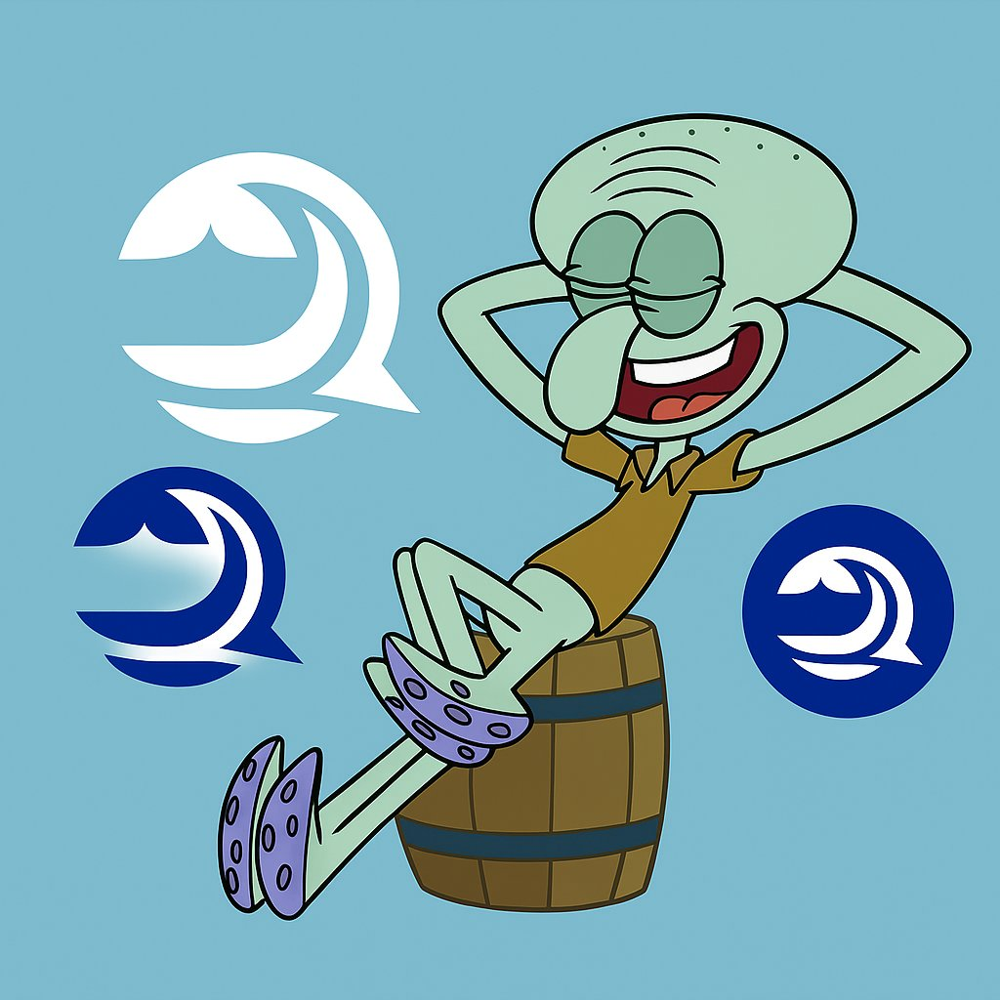

归梦
@GuiMengNya
@jiaowodage0 @bluwhaleai 隐私的价值越来越大

章鱼Ge（积极向上版）
@jiaowodage0
这段时间我一直在重新思考一个问题：
AI 的下一阶段，真的还是比谁的模型更大、更聪明吗？
越往下看越发现，答案却可能是恰恰相反的。
模型仅仅只是工具，真正决定 AI 价值的，一直都是数据。
而更关键的一点是：这些数据产生的价值，最终到底归谁？
也正是在这样的背景下，我开始关注 @bluwhaleai https://t.co/N5xxDfnK3f